Blink to turn pages
Two quick blinks for the next page. Close your eyes and hold to go back. A soft beep tells you it noticed, and the screen stays awake while you read.
Libretto lines up your ebook with its audiobook, word for word, right on your iPhone. Read when you can look, listen when you can’t, and pick up exactly where the other left off.
Free to download.
Libretto Pro is a one-time $7.99.
For iPhone, iPad, iPhone Duo, Apple Watch and Apple TV.
2 pages left in chapter · 3 min
Press play. The narrated line is marked, and the page turns by itself.
Screens straight from Libretto on iPhone, with classics from Project Gutenberg on the shelf.
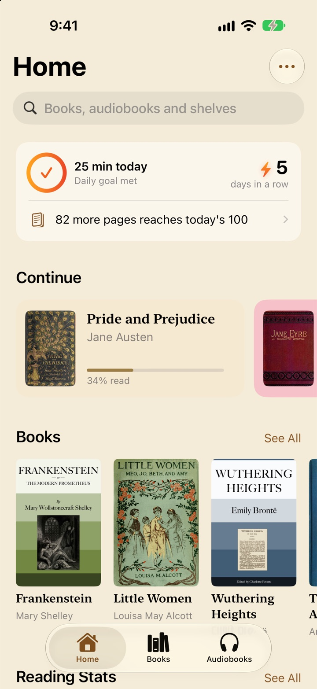
Today’s goal, your streak, and every book you’re partway through.
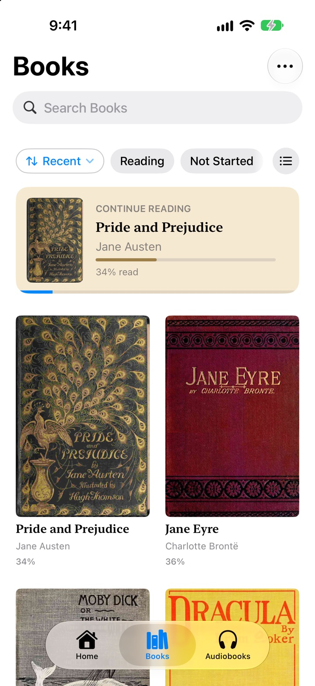
Your library, sorted and filtered your way, ebooks and audiobooks apart.
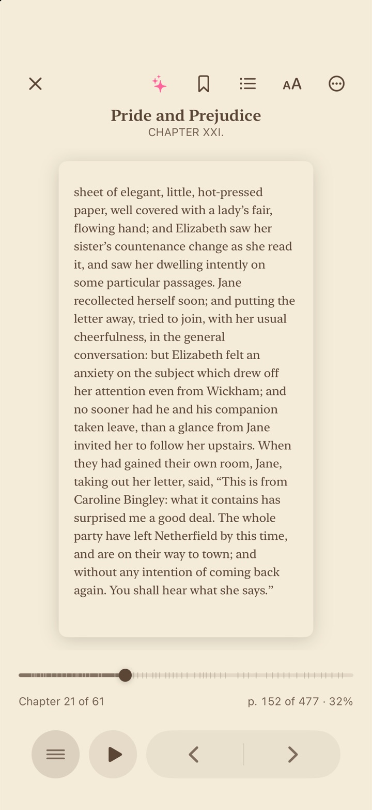
Tap the middle of the page for the menu and a scrubber across the book.

Search, highlights, recaps, listening and hands-free, all in ⋯.
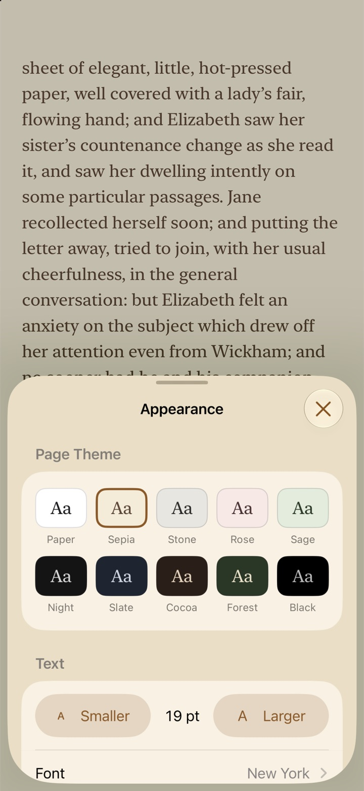
Ten page themes, Apple’s reading fonts, sizes and spacing.

Each chapter summed up as you finish it, never a page ahead.

Who’s who and how they’re connected, from the pages you’ve read.
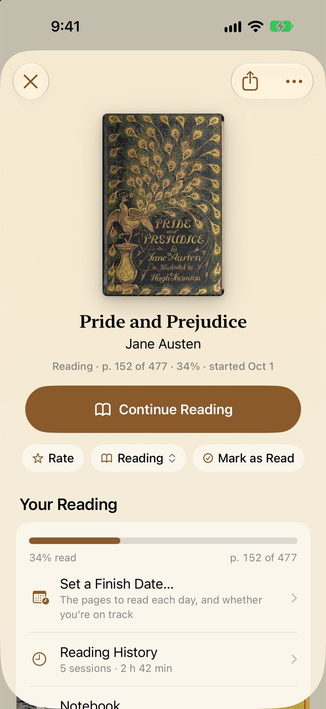
One page for everything about a book, from progress to pairing.
Read-Along pairs a book you own with its audiobook. Libretto listens to the narration on your iPhone and matches it to the text, word by word, so switching between reading and listening never costs you a sentence.
Libretto notices when your library has an ebook and an audiobook of the same title and offers to pair them. You can also pair any two yourself.
Transcription runs on your iPhone, starting from where you’ll listen. It’s ready to play once the next 20 minutes are lined up, usually in about a minute, and keeps going while you read.
Follow the marked line, put the phone in your pocket and keep listening, then open the book at the sentence the narrator reached.
The line being read gets a dot in the margin, a highlight, or an underline. Or nothing at all.
M4B chapters, 0.5× to 3× without the chipmunk voice, a sleep timer that can wait for the end of the chapter, AirPlay, and controls on the Lock Screen.
No audiobook? Your iPhone’s own voices read any EPUB aloud, marking the words as they go and turning the pages for you.
Tap the sparkles in any book and Apple Intelligence writes a recap of what you’ve read, right on your iPhone. It reads only up to the first word on your screen, so nothing ahead is given away.
How long since you last read?
The longer you’ve been away, the further back it goes: the last few pages, then the last chapter, then the whole story so far with a Who’s Who of the main characters. Touch and hold the button to choose for yourself.
How the AI works, and how it avoids spoilersYou last read 3 hours ago.
At the Netherfield ball, Elizabeth learns that Wickham has stayed away, and suspects Darcy is the reason. After two mortifying dances with Mr. Collins, she is surprised into accepting Darcy as a partner.
They dance in near silence until she mentions meeting Wickham in Meryton. Darcy stiffens, and answers that Wickham makes friends easily, though whether he keeps them is less certain.
You last read 3 days ago.
Elizabeth tells Jane what Wickham said about Mr. Darcy, and Jane tries to believe that nobody has acted wrongly. The Bingleys invite the family to a ball at Netherfield, and Mr. Collins claims Elizabeth for the first two dances.
At the ball, Wickham is missing, and Elizabeth blames Darcy. She dances with him at last, and when she raises Wickham, Darcy answers coldly that Wickham makes friends more easily than he keeps them.
You last read 2 weeks ago.
The Bennets of Longbourn have five daughters and no son, so their estate will pass to a cousin. When wealthy Mr. Bingley takes nearby Netherfield Park, he is soon taken with Jane, the eldest. His friend Mr. Darcy is thought proud after he calls Elizabeth only “tolerable” at the Meryton assembly.
Jane falls ill at Netherfield, and Elizabeth walks there to nurse her, trading sharp words with Darcy, who begins to admire her. In Meryton, the charming officer Mr. Wickham tells Elizabeth that Darcy cheated him of a living his father had promised him.
Written on this iPhone by Apple Intelligence. Recaps can mix people up or add a detail.
Select a name you’ve forgotten and Libretto tells you who it is, from the pages you’ve already read.
Wickham
An officer in the militia quartered at Meryton, handsome and easy to like. He tells Elizabeth that Mr. Darcy, his godfather’s son, refused him the church living he had been left, and she believes him.
So Far
Go to First Mention
Finish a chapter and Libretto recaps it while you read on, then adds its people and places to the book’s Story Map: who they are, what they did, and how they’re all connected. It only maps the chapters you’ve read, so it never gets ahead of you.
When you finish a chapter, Apple Intelligence recaps it on your iPhone in the background. A book’s contents gets Recap beside every chapter you’ve read, and Recaps & Story Map has them all on one page.
Only pages you turn count as read. Jump ahead to peek at the ending and those chapters stay off the map. Ask for a chapter you haven’t read, and Libretto checks with you first.
Ten page themes, the fonts you like, and pages that slide, curl over like paper, or scroll. Turn the iPad or unfold an iPhone Duo and the book opens into a two-page spread.
Open and close. The page follows the hinge. Shut, the outer screen keeps your place. Partway open, the book opens into two pages. Flat, one page fills the screen.
Like a book. Hold it half open and two pages sit either side of the fold, with the gutter in the crease. The page buttons run down the right edge, under your thumb.
Landscape. Open flat, it’s a small tablet: one page across the whole screen, with roomier margins. Rather have two? Set Pages to Two Pages and the gutter sits over the hinge.
Portrait. Turn it upright for one tall page, like a paperback’s. The page buttons move to a bar along the bottom.
Closed. Fold it shut mid-page and the outer screen picks up at the same sentence. The page buttons tuck into the strip under the camera.
Tabletop. Stand it half open on a table and the page stays up top. The bottom half becomes a deck: big page buttons, where you are in the chapter, and how long is left.
Elizabeth, having rather expected to affront him, was amazed at his gallantry; but there was a mixture of sweetness and archness in her manner which made it difficult for her to affront anybody, and Darcy had never been so bewitched by any woman as he was by her.
He really believed that, were it not for the inferiority of her connections, he should be in some danger.
Miss Bingley saw, or suspected, enough to be jealous; and her great anxiety for the recovery of her dear friend Jane received some assistance from her desire of getting rid of Elizabeth.
She often tried to provoke Darcy into disliking her guest, by talking of their supposed marriage, and planning his happiness in such an alliance.
“I hope,” said she, as they were walking together in the shrubbery the next day, “you will give your mother-in-law a few hints, when this desirable event takes place, as to the advantage of holding her tongue; and if you can compass it, do cure the younger girls of running after the officers.”
“Have you anything else to propose for my domestic felicity?”
“Oh! yes. Do let the portraits of your uncle and aunt Philips be placed in the gallery at Pemberley.”
Elizabeth, having rather expected to affront him, was amazed at his gallantry; but there was a mixture of sweetness and archness in her manner which made it difficult for her to affront anybody, and Darcy had never been so bewitched by any woman as he was by her. He really believed that, were it not for the inferiority of her connections, he should be in some danger.
Miss Bingley saw, or suspected, enough to be jealous; and her great anxiety for the recovery of her dear friend Jane received some assistance from her desire of getting rid of Elizabeth.
She often tried to provoke Darcy into disliking her guest, by talking of their supposed marriage, and planning his happiness in such an alliance.
“I hope,” said she, as they were walking together in the shrubbery the next day, “you will give your mother-in-law a few hints, when this desirable event takes place, as to the advantage of holding her tongue; and if you can compass it, do cure the younger girls of running after the officers. And, if I may mention so delicate a subject, endeavour to check that little something, bordering on conceit and impertinence, which your lady possesses.”
“Have you anything else to propose for my domestic felicity?”
“Oh! yes. Do let the portraits of your uncle and aunt Philips be placed in the gallery at Pemberley. Put them next to your great-uncle the judge. They are in the same profession, you know, only in different lines.”
Elizabeth, having rather expected to affront him, was amazed at his gallantry; but there was a mixture of sweetness and archness in her manner which made it difficult for her to affront anybody, and Darcy had never been so bewitched by any woman as he was by her.
He really believed that, were it not for the inferiority of her connections, he should be in some danger.
Miss Bingley saw, or suspected, enough to be jealous; and her great anxiety for the recovery of her dear friend Jane received some assistance from her desire of getting rid of Elizabeth.
She often tried to provoke Darcy into disliking her guest, by talking of their supposed marriage, and planning his happiness in such an alliance.
“I hope,” said she, as they were walking together in the shrubbery the next day, “you will give your mother-in-law a few hints, when this desirable event takes place, as to the advantage of holding her tongue; and if you can compass it, do cure the younger girls of running after the officers.”
“Have you anything else to propose for my domestic felicity?”
“Oh! yes. Do let the portraits of your uncle and aunt Philips be placed in the gallery at Pemberley. Put them next to your great-uncle the judge. They are in the same profession, you know, only in different lines.”
“It would not be easy, indeed, to catch their expression, but their colour and shape, and the eyelashes, so remarkably fine, might be copied.”
Elizabeth, having rather expected to affront him, was amazed at his gallantry; but there was a mixture of sweetness and archness in her manner which made it difficult for her to affront anybody, and Darcy had never been so bewitched by any woman as he was by her.
He really believed that, were it not for the inferiority of her connections, he should be in some danger.
Miss Bingley saw, or suspected, enough to be jealous; and her great anxiety for the recovery of her dear friend Jane received some assistance from her desire of getting rid of Elizabeth.
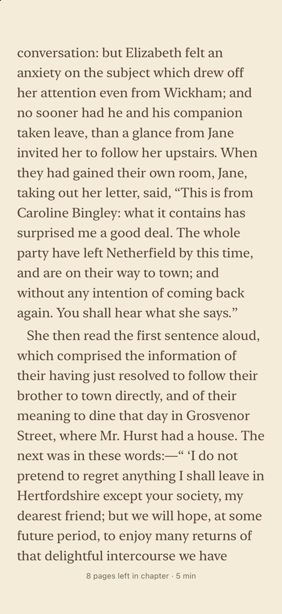
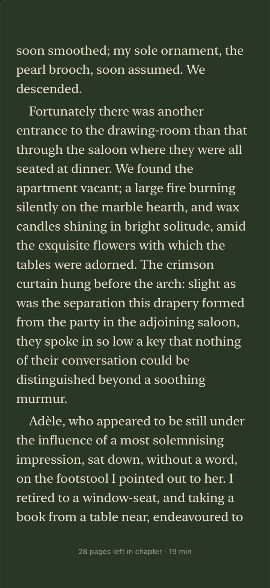
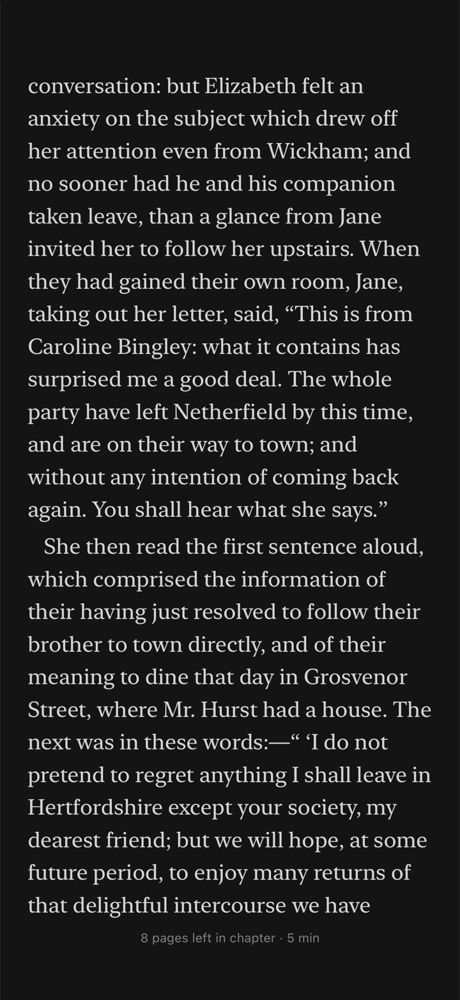
Tap a note marker and the footnote opens beside it, with Go to Note if you want the whole thing. Follow any link and Back to “Chapter 4” returns you to the page you left.
Every place a word or phrase appears, listed by chapter as you type. Accents and curly apostrophes don’t matter, and after the first search it’s instant.
For reading in bed, at the stove, or with a coffee in each hand. Your iPhone’s front camera watches for your eyes, and nothing it sees is recorded or sent anywhere.
Two quick blinks for the next page. Close your eyes and hold to go back. A soft beep tells you it noticed, and the screen stays awake while you read.
The book glides up through a one-line reading guide at the pace you set, from 100 to 600 words a minute. Set it to pause when you look away and it rewinds to where your eyes left; turn on Sleep Detection and if you doze off, it saves your place and lets the screen sleep.
With a paired audiobook, glance up from the page and the narrator carries on from the line you were reading. Look back and the page is waiting at the line it reached.
Prop your iPhone up and turn pages from Apple Watch: tap the arrows, double-tap your finger and thumb, or turn the Digital Crown.
Highlight in five inks and add a note to any passage. The Notebook gathers every highlight, note and bookmark from every book, and searches all of them, for the line you remember but can’t place.
I could easily forgive his pride, if he had not mortified mine. Reader, I married him. Call me Ishmael. It was the best of times, it was the worst of times. Whatever our souls are made of, his and mine are the same.
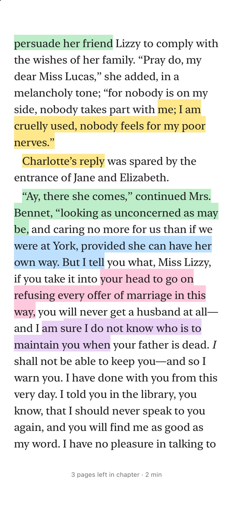
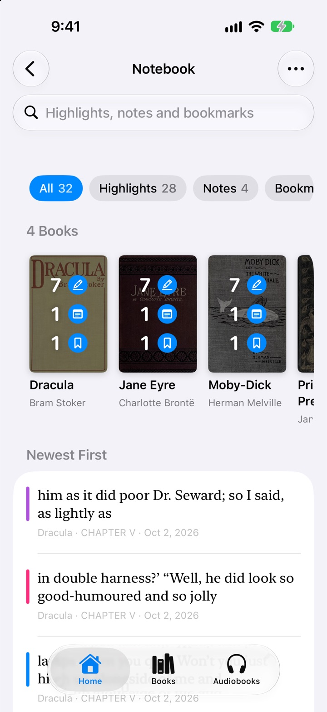
Libretto keeps your library in step through your own iCloud: every book, your place and progress in each, highlights, notes and bookmarks, recaps and Story Maps, and your reading stats. Open a book on any of your devices and it’s at the page you reached last, wherever you were reading.
18 pages
103 pages
5 days
The astonishment of the ladies was just what he wished—that of Mrs. Bennet perhaps surpassing the rest; though when the first tumult of joy was over, she began to declare that it was what she had expected all the while.
“How good it was in you, my dear Mr. Bennet! But I knew I should persuade you at last. I was sure you loved your girls too well to neglect such an acquaintance. Well, how pleased I am! And it is such a good joke, too, that you should have gone this morning, and never said a word about it till now.”
“Now, Kitty, you may cough as much as you choose,” said Mr. Bennet; and, as he spoke, he left the room, fatigued with the raptures of his wife.
“What an excellent father you have, girls,” said she, when the door was shut. “I do not know how you will ever make him amends for his kindness; or me either, for that matter. At our time of life, it is not so pleasant, I can tell you, to be making new acquaintances every day; but for your sakes we would do anything. Lydia, my love, though you are the youngest, I dare say Mr. Bingley will dance with you at the next ball.”
“Oh,” said Lydia, stoutly, “I am not afraid; for though I am the youngest, I’m the tallest.”
The rest of the evening was spent in conjecturing how soon he would return Mr. Bennet’s visit, and determining when they should ask him to dinner.
Chapter III
Not all that Mrs. Bennet, however, with the assistance of her five daughters, could ask on the subject, was sufficient to draw from her husband any satisfactory description of Mr. Bingley. They attacked him in various ways, with barefaced questions, ingenious suppositions, and distant surmises; but he eluded the skill of them all; and they were at last obliged to accept the second-hand intelligence of their neighbour, Lady Lucas. Her report was highly favourable. Sir William had been delighted with him. He was quite young, wonderfully handsome, extremely agreeable, and, to crown the whole, he meant to be at the next assembly with a large party. Nothing could be more delightful! To be fond of dancing was a certain step towards falling in love; and very lively hopes of Mr. Bingley’s heart were entertained.
“If I can but see one of my daughters happily settled at Netherfield,” said Mrs. Bennet to her husband, “and all the others equally well married, I shall have nothing to wish for.”
In a few days Mr. Bingley returned Mr. Bennet’s visit, and sat about ten minutes with him in his library. He had entertained hopes of being admitted to a sight of the young ladies, of whose beauty he had heard much; but he saw only the father. The ladies were somewhat more fortunate, for they had the advantage of ascertaining, from an upper window, that he wore a blue coat and rode a black horse.
An invitation to dinner was soon afterwards despatched; and already had Mrs. Bennet planned the courses that were to do credit to her housekeeping, when an answer arrived which deferred it all. Mr. Bingley was obliged to be in town the following day, and consequently unable to accept the honour of their invitation, etc. Mrs. Bennet was quite disconcerted. She could not imagine what business he could have in town so soon after his arrival in Hertfordshire; and she began to fear that he might always be flying about from one place to another, and never settled at Netherfield as he ought to be. Lady Lucas quieted her fears a little by starting the idea of his being gone to London only to get a large party for the ball; and a report soon followed that Mr. Bingley was to bring twelve ladies and seven gentlemen with him to the assembly. The girls grieved over such a number of ladies; but were comforted the day before the ball by hearing that, instead of twelve, he had brought only six with him from London, his five sisters and a cousin. And when the party entered the assembly-room, it consisted of only five altogether: Mr. Bingley, his two sisters, the husband of the eldest, and another young man.
Mr. Bingley was good-looking and gentlemanlike: he had a pleasant countenance, and easy, unaffected manners. His sisters were fine women, with an air of decided fashion. His brother-in-law, Mr. Hurst, merely looked the gentleman; but his friend Mr. Darcy soon drew the attention of the room by his fine, tall person, handsome features, noble mien, and the report, which was in general circulation within five minutes after his entrance, of his having ten thousand a year. The gentlemen pronounced him to be a fine figure of a man, the ladies declared he was much handsomer than Mr. Bingley, and he was looked at with great admiration for about half the evening, till his manners gave a disgust which turned the tide of his popularity; for he was discovered to be proud, to be above his company, and above being pleased; and not all his large estate in Derbyshire could save him from having a most forbidding, disagreeable countenance, and being unworthy to be compared with his friend.
Mr. Bingley had soon made himself acquainted with all the principal people in the room: he was lively and unreserved, danced every dance, was angry that the ball closed so early, and talked of giving one himself at Netherfield. Such amiable qualities must speak for themselves. What a contrast between him and his friend! Mr. Darcy danced only once with Mrs. Hurst and once with Miss Bingley, declined being introduced to any other lady, and spent the rest of the evening in walking about the room, speaking occasionally to one of his own party. His character was decided. He was the proudest, most disagreeable man in the world, and everybody hoped that he would never come there again. Amongst the most violent against him was Mrs. Bennet, whose dislike of his general behaviour was sharpened into particular resentment by his having slighted one of her daughters.
Elizabeth Bennet had been obliged, by the scarcity of gentlemen, to sit down for two dances; and during part of that time, Mr. Darcy had been standing near enough for her to overhear a conversation between him and Mr. Bingley, who came from the dance for a few minutes to press his friend to join it.
“Come, Darcy,” said he, “I must have you dance. I hate to see you standing about by yourself in this stupid manner. You had much better dance.”
“I certainly shall not. You know how I detest it, unless I am particularly acquainted with my partner. At such an assembly as this, it would be insupportable. Your sisters are engaged, and there is not another woman in the room whom it would not be a punishment to me to stand up with.”
“I would not be so fastidious as you are,” cried Bingley, “for a kingdom! Upon my honour, I never met with so many pleasant girls in my life as I have this evening; and there are several of them, you see, uncommonly pretty.”
“You are dancing with the only handsome girl in the room,” said Mr. Darcy, looking at the eldest Miss Bennet.
“Oh, she is the most beautiful creature I ever beheld! But there is one of her sisters sitting down just behind you, who is very pretty, and I dare say very agreeable. Do let me ask my partner to introduce you.”
“Which do you mean?” and turning round, he looked for a moment at Elizabeth, till, catching her eye, he withdrew his own, and coldly said, “She is tolerable: but not handsome enough to tempt me; and I am in no humour at present to give consequence to young ladies who are slighted by other men. You had better return to your partner and enjoy her smiles, for you are wasting your time with me.”
Mr. Bingley followed his advice. Mr. Darcy walked off; and Elizabeth remained with no very cordial feelings towards him. She told the story, however, with great spirit among her friends; for she had a lively, playful disposition, which delighted in anything ridiculous.
A book opens at the newest page you reached on any of your devices. Rather be where you were on this one? Tap the pill at the bottom to go back. It never moves the page while you’re reading.
Home and the Books tab show each book’s progress from whichever device you read on last, and books you’re reading on another device are in Continue too. Mark one as read or remove it, and it’s done on all of them.
Made on one device, they’re on all of them, in the book and in the Notebook. Remove a book and add it back later, and they come back with it.
Recaps and Story Maps written on one device show on all of them, even an iPad without Apple Intelligence. A Read-Along pair arrives already prepared, ready to play with nothing to transcribe.
Pages and minutes add up across all your devices, so your goal and streak count every one. Sign in to Hardcover once and your other devices are signed in too.
Books you add are kept in Libretto’s iCloud storage, so your other devices can download them: by themselves under 100 MB, and larger ones, like most audiobooks, when you tap them.
It all stays in your own iCloud. There’s no Libretto account and no Libretto server, so what you read is never sent to us. Sync with iCloud is on from the start, in Settings → iCloud & Storage.
Libretto keeps a quiet log of every page and minute, reading and listening alike. Set a few minutes a day, a number of books for the year, or a date to finish a book by, and it works out tonight’s pages for you.
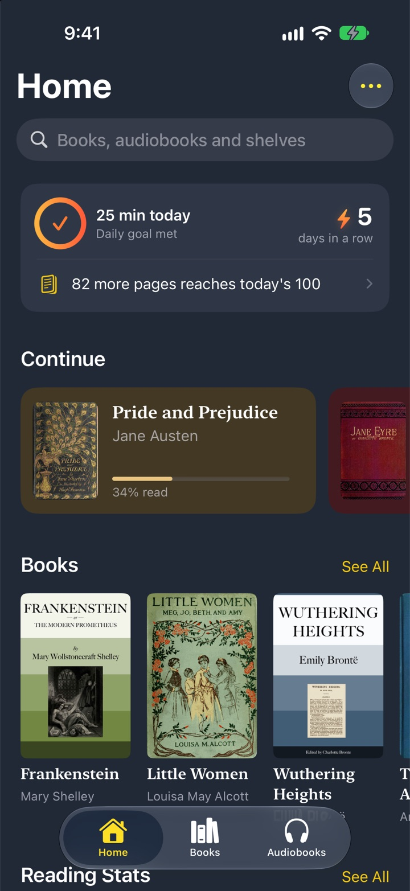
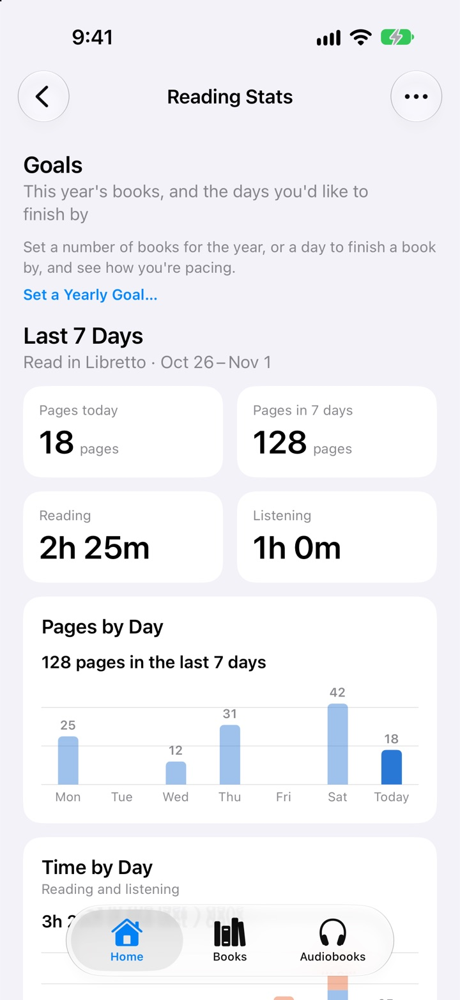
Five minutes of reading or listening keeps it going, or whatever you set. Today only counts against you once it’s over.
Pick a number of books, or bring your Hardcover goal, and Libretto tells you the pace: a book every eight days gets you there.
Give a book a date, for a book club or a library loan, and the page footer counts down tonight’s pages as you read.
Finished a book, or a big week? Make a card with the cover, your rating and your numbers, square or story-sized.
Connect your Hardcover account and Libretto keeps your shelves, progress and half-star ratings in step. Coming from Goodreads? Hardcover imports your history, and Libretto picks it up from there.
The Shelf tab helps you choose what’s next: filter your Want to Read shelf by length, mood, genre and rating, offline and instantly, or let it pick one for you. Reading Stats charts your books by month, genre, mood and author.
Goals, stats and sharing, in detail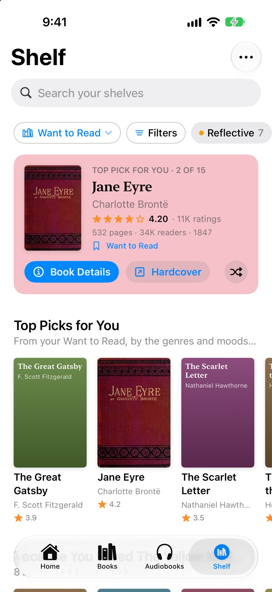
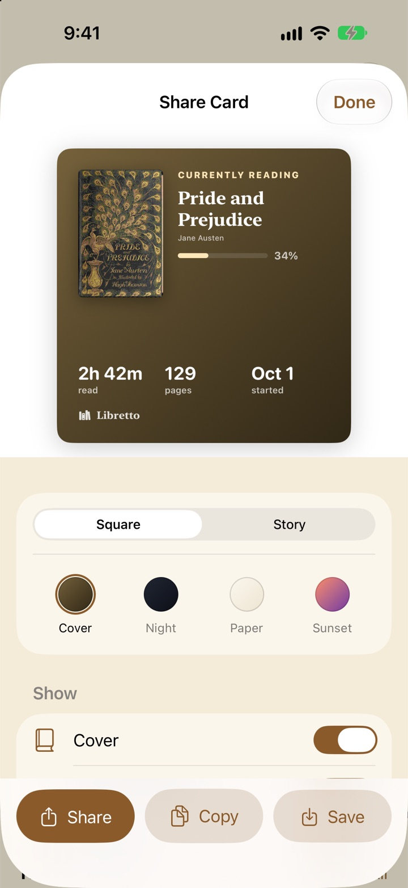
Open a file from the Files app, share it from another app, paste a download link, or drop in a whole zip. Ebooks and audiobooks sort themselves into the right place.
Want something new to read? Free Classics searches thousands of public-domain books, a tap away. Libretto opens DRM-free files; books locked to another store’s app can’t be opened.
Getting started: adding books and finding your wayEbooks
Audiobooks
Your books, your place and your streak follow you from the iPhone in your pocket to the watch on your wrist and the TV across the room.
Read a chapter with the Digital Crown, or take the next few hours of an audiobook out on a walk and leave the iPhone at home.
Two big pages for across the room, or press Play and read along with the audiobook, from where you left off on your iPhone.
A two-page spread when there’s room for one, Home in two columns, and the Story Map open beside your recaps.
The book you’re on, your streak, your yearly goal and your Finish By dates, on the Home Screen and the Lock Screen.
Libretto works with Siri, Shortcuts, Spotlight and the Action button. Pick up your book, start your audiobook, or set a sleep timer without opening the app.
How’s my reading in Libretto?
You’ve read 18 pages today, in 25 minutes. 82 more for your goal of 100. Your streak is 5 days.
18 pagesGoal 100
Everything you need to read and listen is free. Libretto Pro is a single purchase, shared with your family. No subscription.
Free
$7.99 once
If the file is DRM-free, yes. Many publishers and stores sell DRM-free EPUBs and audiobooks, and Libretto opens them from Files, a link or another app. Books that only open in another store’s app are locked to it, and Libretto can’t open them.
It starts where you’ll listen and is ready to play once the next 20 minutes are lined up, usually within a minute. The rest is prepared while you read, and carries on in the background where iOS allows.
iPhone and iPad with iOS 26 or later, including iPhone Duo; Apple Watch with watchOS 11 or later, to read, listen and turn your iPhone’s pages; and Apple TV with tvOS 26 or later. Catch Me Up, Remind Me and Chapter Recaps need Apple Intelligence: an iPhone 15 Pro or later, or an iPad with an M-series or A17 Pro chip. An iPhone, iPad or Apple TV without it shows the recaps and Story Maps your other devices write, through iCloud.
Never to us: Libretto doesn’t have a server. With Sync with iCloud on, your library, places, highlights and reading log are kept in your own iCloud so your other devices get them, and you can turn it off in Settings → iCloud & Storage. If you connect Hardcover, your reading status, progress and ratings go to your own Hardcover account, and nothing else does.
Your whole library: every book’s details and cover, your place and progress in each, highlights, notes and bookmarks, recaps and Story Maps, Read-Along pairs, already prepared, your reading log, goal and streak, and your Hardcover sign-in. Books you add can be kept in iCloud too, so your other devices can download them. Both devices need to be signed in to the same Apple Account with iCloud on.
The newest one: the page you reached last, on any of your devices. If that isn’t where this device was, a pill at the bottom says so, “Continued from iPhone”, and tapping it takes you back. The page only moves when you open the book, come back to it, or leave it alone for a couple of minutes, never while you’re reading.
No. It’s one purchase of $7.99, yours for good, and Family Sharing lets the rest of your household use it too.
No. It’s built only from chapters you’ve finished, and only pages you turn count: jump ahead to the last chapter and the chapters you skipped stay off the map. If you ask for a recap of a chapter you haven’t read, Libretto asks first, and keeps it out of the map and the profiles until you get there.
Usually right on the plot and the people. They’re written by the small model that runs on your iPhone, so now and then one mixes two characters up or adds a detail. Every recap says so at the bottom.
Libretto does a lot quietly. The guides go as deep as you like: how sync decides which page to open, what the on-device AI reads and what it never sees, and what every setting does.
Browse the guidesLibretto is free on the App Store for iPhone and iPad.
Download on theApp Store